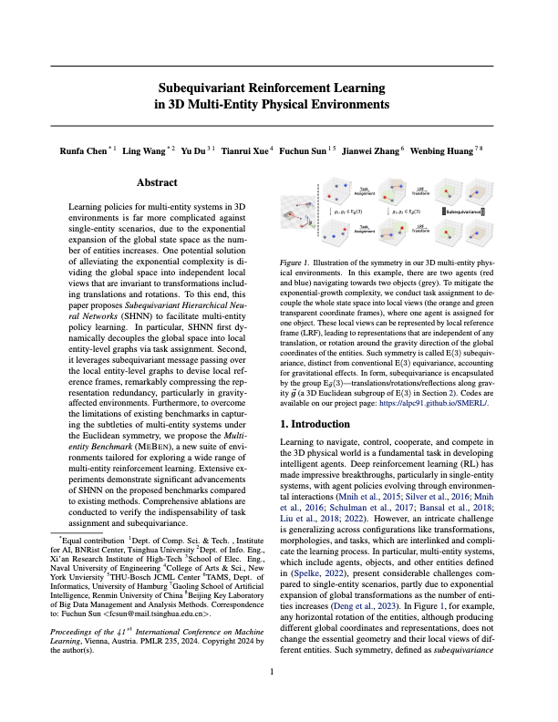

in 3D Multi-Entity Physical Environments
Learning policies for multi-entity systems in 3D environments is far more complicated against single-entity scenarios, due to the exponential expansion of the global state space as the number of entities increases. One potential solution of alleviating the exponential complexity is dividing the global space into independent local views that are invariant to transformations including translations and rotations. To this end, this paper proposes Subequivariant Hierarchical Neural Networks (SHNN) to facilitate multi-entity policy learning. In particular, SHNN first dynamically decouples the global space into local entity-level graphs via task assignment. Second, it leverages subequivariant message passing over the local entity-level graphs to devise local reference frames, remarkably compressing the representation redundancy, particularly in gravity-affected environments. Furthermore, to overcome the limitations of existing benchmarks in capturing the subtleties of multi-entity systems under the Euclidean symmetry, we propose the Multi-entity Benchmark (MEBEN), a new suite of environments tailored for exploring a wide range of multi-entity reinforcement learning. Extensive experiments demonstrate significant advancements of SHNN on the proposed benchmarks compared to existing methods. Comprehensive ablations are conducted to verify the indispensability of task assignment and subequivariance.
|
|
Illustration of the symmetry in our 3D multi-entity physical environments. In this example, there are two agents (red and blue) navigating towards two objects (grey). To mitigate the exponential-growth complexity, we conduct task assignment to decouple the whole state space into local views (the orange and green transparent coordinate frames), where one agent is assigned for one object. These local views can be represented by local reference frame (LRF), leading to representations that are independent of any translation, or rotation around the gravity direction of the global coordinates of the entities. Such symmetry is called E(3) subequivariance, distinct from conventional E(3) equivariance, accounting for gravitational effects. In form, subequivariance is encapsulated by the group Eg(3)-translations/rotations/reflections along gravity (a 3D Euclidean subgroup of E(3)).
Subequivariant Hierarchical Neural Networks (SHNN)
The flowchart of SHNN. On the left, The states of each entity i are processed into scalar features hi and directional geometric vectors Zi, and are updated by local entity-level subequivariant message passing in a task assignment entity-level graph. Finally, the invariant local reference frame body-level control policy is obtained. Here, function serves as the local entity-level subequivariant MP and E is the local entity-level graph topology. The right side illustrates our key innovation: the dynamic task assignment leveraging bipartite graph matching, and the construction of an Eg(3)-equivariant local reference frame for each entity to address local transformations.
|
|
Multi-entity Benchmark (MEBEN)
Illustration of MEBEN: Team Reach (left) where agents cooperate to collectively reach all fixed balls, and Team Sumo (right) where agents engage in both cooperation and competition to push opponents away from the fixed ball. These tasks necessitate the decoupling of local transformations via dynamic task assignment graph construction from the overall structure (depicted by a fully connected graph), while employing Eg(3)-equivariance to effectively compress global state space.
|
|
Team Reach Demo
|
|
Team Sumo Demo
|
|
Source Code
We have released our implementation in JAX on the github page. Try our code!
[GitHub]
Related Work
Jiaqi Han, Wenbing Huang, Hengbo Ma, Jiachen Li, Joshua B. Tenenbaum, Chuang Gan. Learning Physical Dynamics with Subequivariant Graph Neural Networks. NeurIPS 2022. [website] [paper]
Runfa Chen*, Jiaqi Han*, Fuchun Sun, Wenbing Huang. Subequivariant Graph Reinforcement Learning in 3D Environment. ICML 2023 Oral. [website] [paper]
Paper and Bibtex
|  | Runfa Chen*, Ling Wang*, Yu Du, Tianrui Xue, Fuchun Sun, Jianwei Zhang, Wenbing Huang. Subequivariant Reinforcement Learning in 3D Multi-Entity Physical Environments. ICML 2024. [ArXiv] [Bibtex] | |
@inproceedings{chen2024smerl,
title = {Subequivariant Reinforcement Learning in 3D Multi-Entity Physical Environments},
author = {Chen, Runfa and Wang, ling and Du, Yu and Xue, Tianrui and Sun, Fuchun and Zhang, Jianwei and Huang, Wenbing},
booktitle={International Conference on Machine Learning},
year={2024},
organization={PMLR}
}
|
Poster
|
|
Acknowledgements
This work is funded by the National Science and Technology Major Project of the Ministry of Science and Technology of China (No.2018AAA0102903), and partly by THU-Bosch JCML Center.
We sincerely thank the reviewers for their comments that significantly improved our paper's quality.
We sincerely thank the reviewers for their comments that significantly improved our paper's quality.